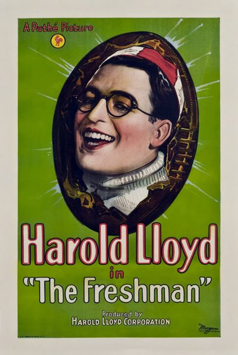

The Freshman
Studio: Pathé
Starring: Harold Lloyd, Jobyna Ralston, James Anderson
Director: Fred C. Newmeyer, Sam Taylor
Writer: Sam Taylor, Ted Wilde
Producer: Harold Lloyd
The Freshman is a 1925 American silent comedy film that tells the story of a college freshman trying to become popular by joining the school football team. It stars Harold Lloyd, Jobyna Ralston, Brooks Benedict, and James Anderson. It remains one of Lloyd's most successful and enduring films.
Trivia
- Some shots were also made in the park across the street from the depot.
- Some 80 cast and crew were involved at this location.
- Reverse angle reaction shots of the college dean were later done at the Culver City Pacific Electric depot near the film studio.
Filming Locations
- Train station scenes were filmed on November 12 - 13, 1924 at the Southern Pacific Railroad depot at Ontario, California, with a four-car train set and locomotive provided by the railroad and standing on a siding adjacent to the station.
- Exteriors were filmed near the USC campus in Los Angeles.
- The game sequence was shot on the field at the Rose Bowl, and the crowd scenes were shot at halftime at California Memorial Stadium during the November 1924 Big Game between UC Berkeley and Stanford University.
Previous Showings
11 Runs • 4 Festivals
4,954 tickets sold
Original Billings: 2 runs (November 2, 1925 - December 3, 1926)
Original Run: November 2, 1925 (Monday - Wednesday)
All runs on record (11):
- November 2, 1925 (Monday - Wednesday)Harold Lloyd
- December 2 - 3, 1926 (Thursday - Friday)Harold Lloyd
- January 17, 1990 · 337 ticketsw/ Safety Last
- September 28 - 29, 1991 · 557 ticketsw/ Varsity Show, Horse Feathers, Good News (1930), Good News (1947), The Male Animal, Hold That Co-ed, Pigskin Parade
- August 11, 1993 · 923 tickets
- February 3, 1995 · 951 tickets
- July 17, 1996 · 897 tickets
- August 4, 1999 · 749 ticketsSummer 1999
- July 31, 2002Summer 2002: Billy Wilder Remembered and Cary Grant, Part 3w/ The Kid Brother
- February 13, 2009 · 340 ticketsWinter 2009w/ The College Coquette
- June 10, 2025 · 200 tickets100th Anniversaryw/ Rolling Home